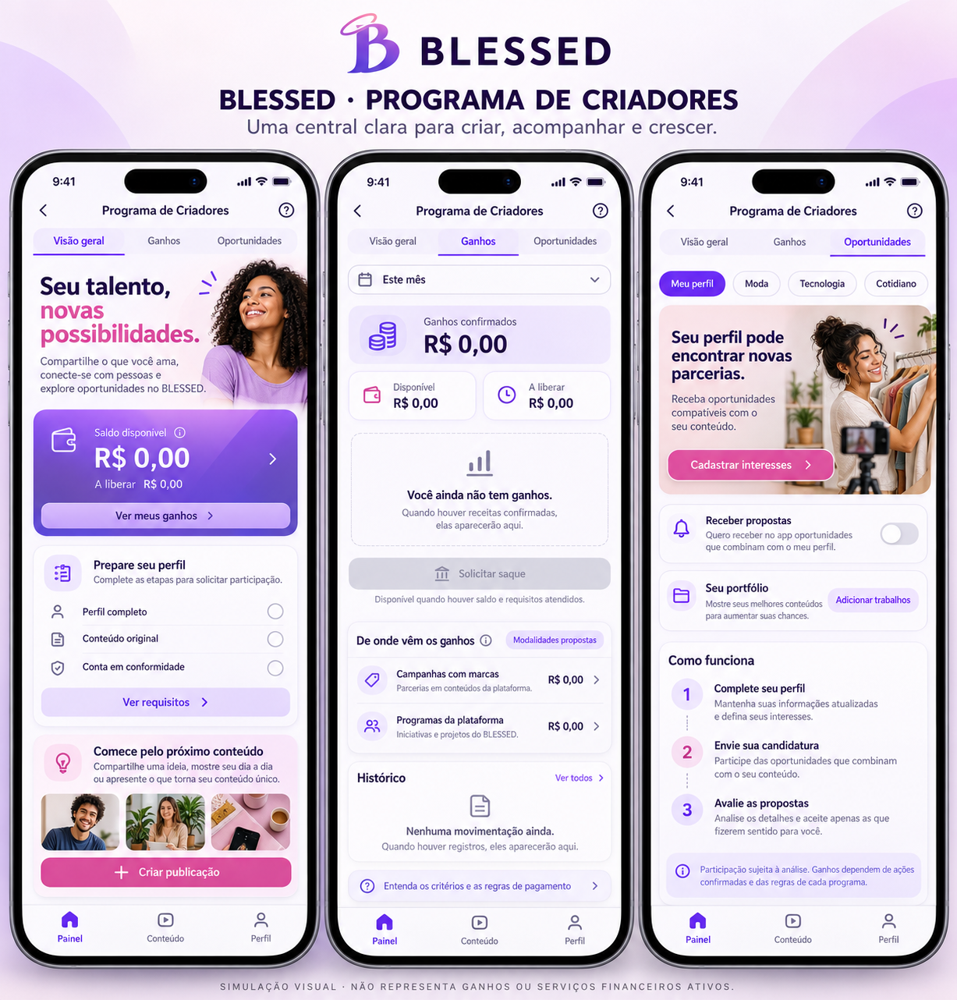

Programa de Criadores · simulação
Visão geral, ganhos e oportunidades. Saldo zerado enquanto não houver receitas confirmadas.
Esta imagem é uma proposta visual. Não representa serviços financeiros implementados ou ganhos garantidos.
Baixar imagem original · Abrir imagem inteira

O painel atual do aplicativo não foi alterado.